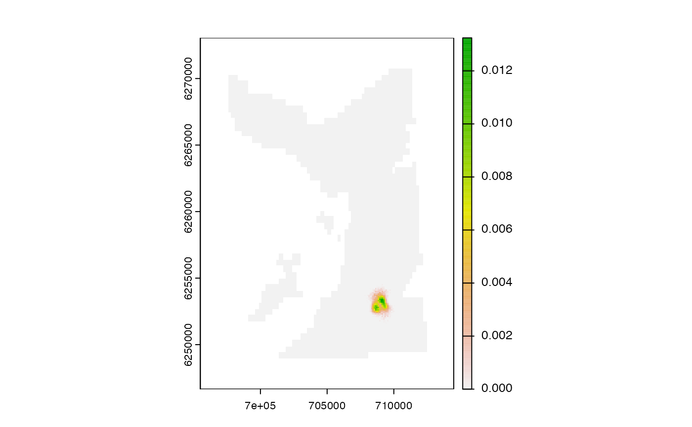
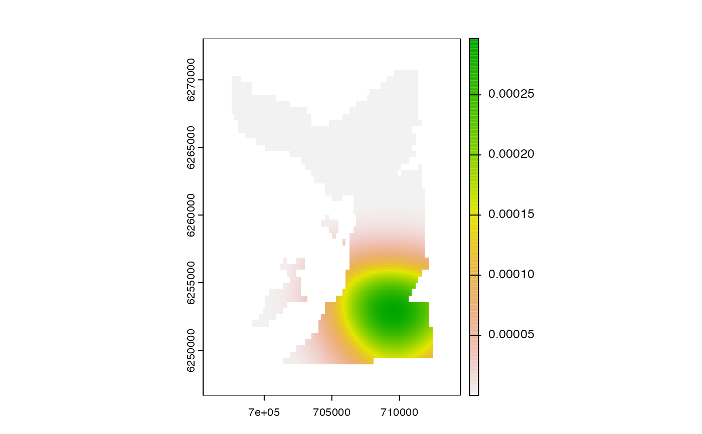
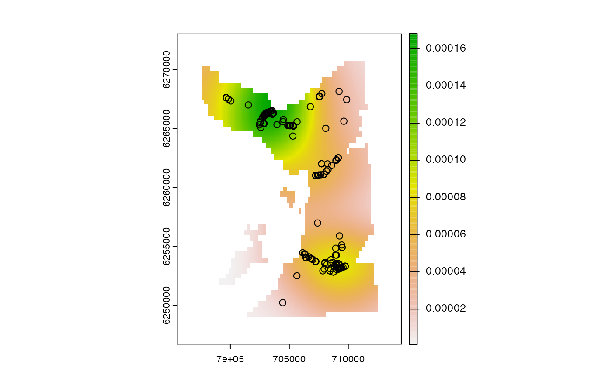
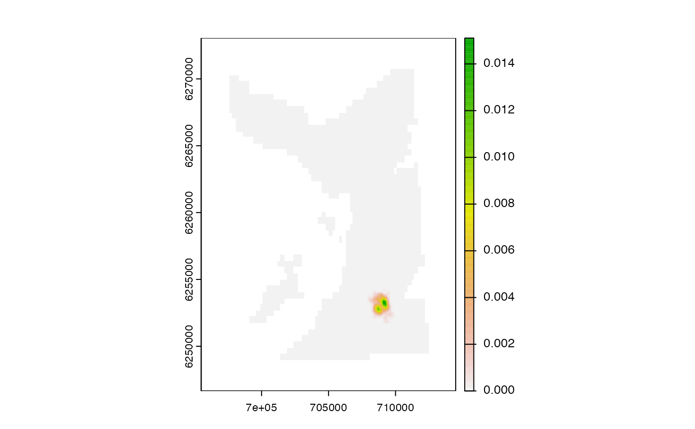
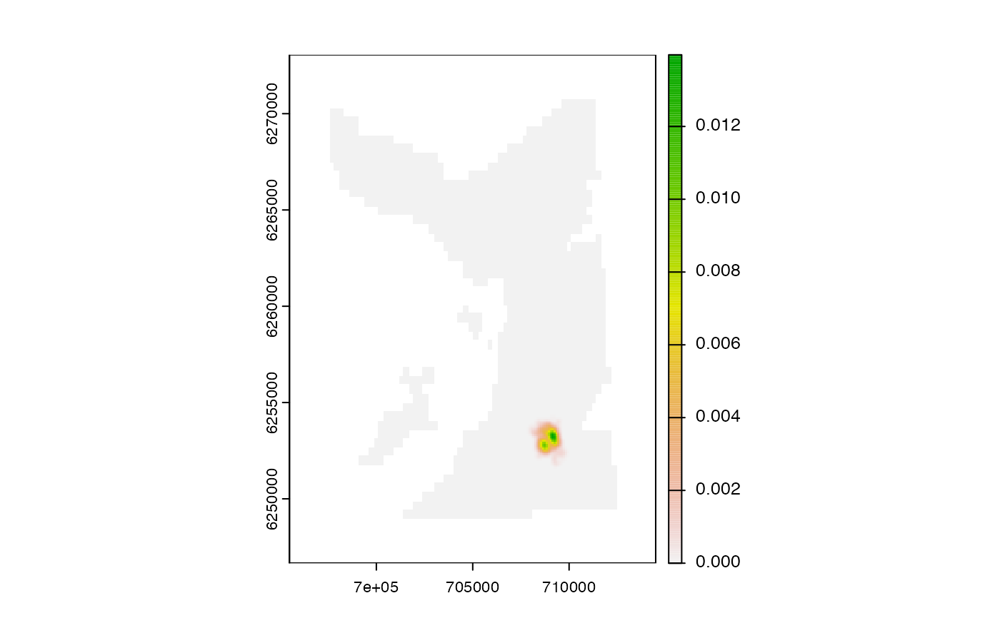
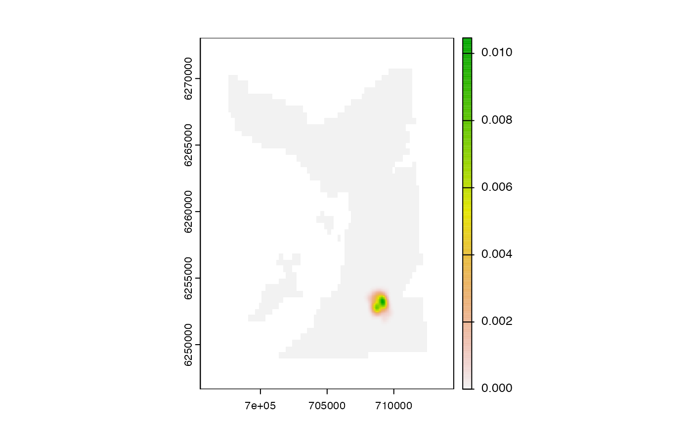

pf_map_dens() creates a smoothed density map (e.g., of particle samples).
as.im.SpatRaster(.xpf)
as.owin.SpatRaster(.xpf, .im = NULL)
as.owin.sf(.poly, .bbox = sf::st_bbox(.poly), .invert = TRUE)
pf_map_dens(
.xpf,
.im = NULL,
.owin = NULL,
.coord = NULL,
.plot = TRUE,
.use_tryCatch = TRUE,
.verbose = TRUE,
...
)A SpatRaster that defines the grid for density estimation and, if .coord = NULL, the points (and associated weights) that are smoothed. Weights must sum to one. The coordinate reference system of .xpf must be planar and specified.
A pixel image representation of .xpf (see as.im.SpatRaster() and spatstat.geom::im()) and an observation window (see as.owin.SpatRaster(), as.owin.sf() and spatstat.geom::owin()). These objects may be computed automatically from .xpf (with rectangular or gridded observation windows used by default, depending on whether or not .xpf contains NAs), but this option can be over-ridden. For faster results, use a rectangular or polygon observation window (see as.owin.sf()). If .coord is supplied, .im is necessarily (re)-defined internally (see Details).
For as.owin.sf to construct observation windows from sf objects.
.poly is an sf polygon object;
.bbox is the bounding of a simple feature (see sf::st_bbox());
.invert is a logical variable that defines whether or not to invert .poly (e.g., to turn a terrestrial polygon into an aquatic polygon);
(optional) A matrix, data.frame or data.table with x and y coordinates, in columns named x and y or cell_x and cell_y. x and y columns are used preferentially. Coordinates must be planar. A timestep column can also be included if there are multiple possible locations at each time step. A mark column can be included with coordinate weights; otherwise, equal weights are assumed (see Details). Other columns are ignored.
A logical variable that defines whether or not to plot the output.
A logical variable that controls error handling:
If .use_tryCatch = FALSE, if density estimation fails with an error, the function fails with the same error.
If .use_tryCatch = TRUE, if density estimation fails with an error, the function produces a warning with the error message and returns NULL.
Controls on function prompts and messages (see pf_forward().
Arguments passed to spatstat.explore::density.ppp(), such as sigma (i.e., the bandwidth).
The function returns a normalised SpatRaster (or NULL if spatstat.explore::density.ppp() fails and .use_tryCatch = TRUE).
pf_map_dens() smooths (a) a SpatRaster or (b) a set of inputted coordinates:
If .coords is NULL, .xpf cell coordinates are used for density estimation and cell values are used as weights.
If coordinates are supplied, coordinates are re-expressed on .xpf and then used for density estimation. This option is generally faster. Equal weights are assumed unless specified. Default or supplied weights are normalised to sum to one at each time step. The total weight of each location within time steps is calculated and then these weights are aggregated by location across the whole time series and renomalised. See the internal .pf_map_weights() function for full details.
Cell coordinates are converted to a spatstat.geom::ppp() object, which is passed, alongside the observation window (.owin) and an image of the weights to spatstat.explore::density.ppp() for the estimation. Weights must sum to one.
as.im.SpatRaster(), as.owin.SpatRaster() and as.owin.sf() are helper functions that convert a SpatRaster to a pixel image and an observation window (see spatstat.geom::owin()). as.im.SpatRaster is based on maptools::as.im.RasterLayer(). as.owin.SpatRaster() either defines a rectangular window, if there are no NAs on .xpf, or converts .xpf directly to an owin object. Gridded observation windows, especially if high resolution, considerably slow down density estimation and may exhaust vector memory. Use rectangular windows, or convert sf objects to polygon windows (via as.owin.sf()]) if possible.
Coordinates and associated weights are smoothed via spatstat.explore::density.ppp() into an image. Pixel resolution and smoothing parameters such as bandwidth can be controlled via ... arguments which are passed directly to this function. The output is translated into a gridded probability density surface (on the geometry defined by .xpf).
The PF (forward simulation) is implemented by pf_forward();
PF is supported by:
Setup helpers, namely pf_files();
The backward pass is implemented by pf_backward_*();
Movement paths are built from PF outputs via pf_path() functions:
pf_path() reconstructs paths;
pf_path_pivot() supports path reconstruction;
To reconstruct maps of space use, see:
pf_coords() to extract particle coordinates;
pf_map_pou() for probability-of-use maps;
pf_map_dens() for smooth utilisation distributions;
get_hr() for home range estimates;
#### Set up examples
# Load and attach selected packages
require(data.table)
require(dtplyr)
#> Loading required package: dtplyr
require(dplyr, warn.conflicts = FALSE)
#> Loading required package: dplyr
require(spatstat.explore)
#> Loading required package: spatstat.explore
#> Loading required package: spatstat.data
#> Loading required package: spatstat.geom
#> spatstat.geom 3.2-7
#>
#> Attaching package: ‘spatstat.geom’
#> The following objects are masked from ‘package:terra’:
#>
#> area, delaunay, is.empty, rescale, rotate, shift, where.max,
#> where.min
#> The following object is masked from ‘package:data.table’:
#>
#> shift
#> Loading required package: spatstat.random
#> spatstat.random 3.2-2
#> Loading required package: nlme
#>
#> Attaching package: ‘nlme’
#> The following object is masked from ‘package:dplyr’:
#>
#> collapse
#> spatstat.explore 3.2-5
# Define grid
gebco <- dat_gebco()
#### Example (1): Smooth a POU SpatRaster
# Estimate POU on a grid based on pre-prepared particle samples
out_pfb <- dat_pfbk()
pou <- pf_map_pou(.history = out_pfb$history, .bathy = gebco)

# Smooth POU
dens_1 <- pf_map_dens(pou)
#> `patter::pf_map_dens()` called @ 2023-12-18 15:10:14...
#> ... Processing `.xpf`...
#> Observation window is gridded.
#> ... Building `ppp` object...
#> ... ... Using `.xpf`...
#> ... ... Defining `ppp` object...
#> ... Estimating density surface...
#> ... Scaling density surface...

#> `patter::pf_map_dens()` call ended @ 2023-12-18 15:10:14 (duration: ~0 sec(s)).
#### Example (2): Smooth particle coordinates
# This approach is equivalent to Example (1) & the outputs are identical
# But this implementation can be considerably faster
dens_2 <- pf_map_dens(gebco, .coord = pf_coords(out_pfb$history, gebco))
#> `patter::pf_map_dens()` called @ 2023-12-18 15:10:14...
#> ... Processing `.xpf`...
#> Observation window is gridded.
#> ... Building `ppp` object...
#> ... ... Using `.coord`...
#> ... ... Defining `ppp` object...
#> ... Estimating density surface...
#> ... Scaling density surface...
#> `patter::pf_map_dens()` call ended @ 2023-12-18 15:10:14 (duration: ~0 sec(s)).
stopifnot(all.equal(dens_1, dens_2))
#### Example (3): Smooth COAs
# Define data list
dlist <- pat_setup_data(.acoustics = dat_acoustics[individual_id == 25, ],
.moorings = dat_moorings,
.bathy = dat_gebco(),
.lonlat = FALSE)
#> Warning: `.moorings` coordinates coerced onto `.bathy` grid.
# Calculate COAs
out_coa <- coa(dlist, .delta_t = "12 hours", .plot_weights = FALSE)
out_coa <- out_coa[, .(x = coa_x, y = coa_y)]
# Smooth centres of activity
dens_3 <- pf_map_dens(gebco, .coord = out_coa)
#> `patter::pf_map_dens()` called @ 2023-12-18 15:10:15...
#> ... Processing `.xpf`...
#> Observation window is gridded.
#> ... Building `ppp` object...
#> ... ... Using `.coord`...
#> ... ... Defining `ppp` object...
#> ... Estimating density surface...
#> ... Scaling density surface...
#> `patter::pf_map_dens()` call ended @ 2023-12-18 15:10:15 (duration: ~0 sec(s)).
graphics::points(out_coa)

#### Example (4): Control smoothing parameters via `spatstat.explore::density.ppp()`
# E.g. use fixed bandwidth:
pf_map_dens(pou, sigma = 5)
#> `patter::pf_map_dens()` called @ 2023-12-18 15:10:15...
#> ... Processing `.xpf`...
#> Observation window is gridded.
#> ... Building `ppp` object...
#> ... ... Using `.xpf`...
#> ... ... Defining `ppp` object...
#> ... Estimating density surface...
#> ... Scaling density surface...
#> `patter::pf_map_dens()` call ended @ 2023-12-18 15:10:15 (duration: ~0 sec(s)).
#> class : SpatRaster
#> dimensions : 264, 190, 1 (nrow, ncol, nlyr)
#> resolution : 100, 100 (x, y)
#> extent : 695492.1, 714492.1, 6246657, 6273057 (xmin, xmax, ymin, ymax)
#> coord. ref. : WGS 84 / UTM zone 29N (EPSG:32629)
#> source(s) : memory
#> name : lyr.1
#> min value : -4.871511e-18
#> max value : 2.356800e-02
pf_map_dens(pou, sigma = 100)
#> `patter::pf_map_dens()` called @ 2023-12-18 15:10:15...
#> ... Processing `.xpf`...
#> Observation window is gridded.
#> ... Building `ppp` object...
#> ... ... Using `.xpf`...
#> ... ... Defining `ppp` object...
#> ... Estimating density surface...
#> ... Scaling density surface...

#> `patter::pf_map_dens()` call ended @ 2023-12-18 15:10:15 (duration: ~0 sec(s)).
#> class : SpatRaster
#> dimensions : 264, 190, 1 (nrow, ncol, nlyr)
#> resolution : 100, 100 (x, y)
#> extent : 695492.1, 714492.1, 6246657, 6273057 (xmin, xmax, ymin, ymax)
#> coord. ref. : WGS 84 / UTM zone 29N (EPSG:32629)
#> source(s) : memory
#> name : lyr.1
#> min value : -3.769630e-18
#> max value : 1.510748e-02
# E.g., perform automatic bandwidth selection using cross validation:
pf_map_dens(pou, sigma = bw.diggle)
#> `patter::pf_map_dens()` called @ 2023-12-18 15:10:15...
#> ... Processing `.xpf`...
#> Observation window is gridded.
#> ... Building `ppp` object...
#> ... ... Using `.xpf`...
#> ... ... Defining `ppp` object...
#> ... Estimating density surface...
#> ... Scaling density surface...

#> `patter::pf_map_dens()` call ended @ 2023-12-18 15:10:15 (duration: ~0 sec(s)).
#> class : SpatRaster
#> dimensions : 264, 190, 1 (nrow, ncol, nlyr)
#> resolution : 100, 100 (x, y)
#> extent : 695492.1, 714492.1, 6246657, 6273057 (xmin, xmax, ymin, ymax)
#> coord. ref. : WGS 84 / UTM zone 29N (EPSG:32629)
#> source(s) : memory
#> name : lyr.1
#> min value : -3.797942e-18
#> max value : 1.396895e-02
pf_map_dens(pou, sigma = bw.scott)
#> `patter::pf_map_dens()` called @ 2023-12-18 15:10:15...
#> ... Processing `.xpf`...
#> Observation window is gridded.
#> ... Building `ppp` object...
#> ... ... Using `.xpf`...
#> ... ... Defining `ppp` object...
#> ... Estimating density surface...
#> ... Scaling density surface...

#> `patter::pf_map_dens()` call ended @ 2023-12-18 15:10:15 (duration: ~0 sec(s)).
#> class : SpatRaster
#> dimensions : 264, 190, 1 (nrow, ncol, nlyr)
#> resolution : 100, 100 (x, y)
#> extent : 695492.1, 714492.1, 6246657, 6273057 (xmin, xmax, ymin, ymax)
#> coord. ref. : WGS 84 / UTM zone 29N (EPSG:32629)
#> source(s) : memory
#> name : lyr.1
#> min value : -3.285401e-18
#> max value : 1.046399e-02
# pf_map_dens(pou, sigma = bw.CvL) # ~12 s (slow)
# pf_map_dens(pou, sigma = bw.ppl) # ~14 s (slow)